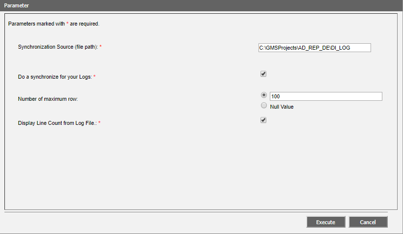

Configuring Advanced Reporting for Desigo Insight Log Data
- In System Browser, select Application View.
- Select Applications > Advance Reporting.
- The Application Viewer tab opens.
- Click the Configuration page.
- Select section Configuration.
- Select DI Migration Report Settings and click Edit.
- The Parameter dialog box opens.

- Define:
- In the Synchronization Source field, enter the path for the Desigo Insight log data, for example: [Installation Drive]:\[Installation Folder]\[Project Name]\DI_LO.
- Select check box Synchronization source XML Log database files. The check box only needs to be selected the first time.
- Select check box Synchronization source XML Audit database files. The check box only needs to be selected the first time.
- In the Number of maximum rows field, the number of report lines to be created or select option No value (= all lines).
- Select check box Display Line Count from Log File. When selected, it displays the number of entries on an XML file.
- Click Execute.
- The Desigo Insight log data are synchronized with the Desigo CC project and are available to create the report. The synchronized data is saved in folder [Installation drive]:\Program Files\Apache Software Foundation\Tomcat 9.0\webapps\gms-birt\1\GMS_DIMigration\resources\data\Log.
- Test the Desigo Insight Archive report.